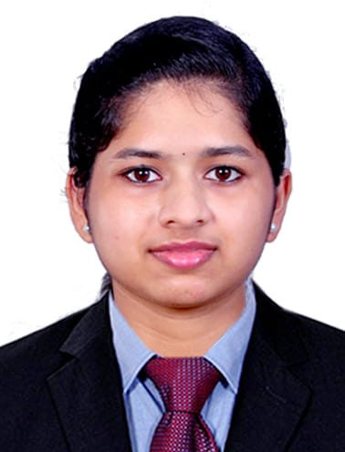

Continuous Learning
I like discovering new concepts and steadily improving my technical knowledge.
GET TO KNOW ME
A little introduction, my interests and what motivates me.

WHO I AM
I'm Ansumol Saby, an MCA student at Santhigiri College. I completed my BCA at Mar Augusthinose College. My academic journey has helped me develop an interest in technology, programming and creating useful digital solutions.
I enjoy exploring how websites are designed and developed, learning new tools and improving my skills through practical projects. I believe every project is an opportunity to learn something new.
WHAT I VALUE
I like discovering new concepts and steadily improving my technical knowledge.
I enjoy exploring ideas and finding clear, user-friendly ways to present information.
Academic projects help me practise, solve problems and learn by doing.